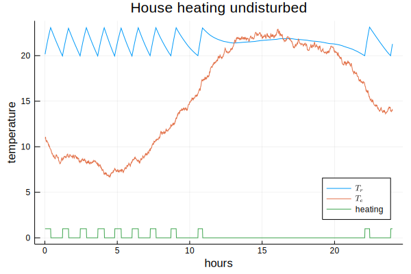
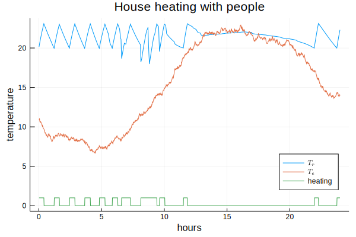

House heating
In a hybrid system we have continuous processes and discrete events interacting in one system. A thermostat is a basic example of this:
- Heating changes between two states: On and Off.
- A room cools $\dot{Q_c}\; [J/h]$ at a certain rate proportional to the difference between room temperature $T_r$ and environment temperature $T_e\; [K]$.
- It heats $\dot{Q_h}\; [J/h]$ at a rate proportional to the temperature difference between temperature of the heating fluid $T_h\; [K]$ and room temperature $T_r\; [K]$.
- The room temperature $T_r$ changes proportional to the difference between heating $\dot{Q_h}$ and cooling $\dot{Q_c}$.
We assume that
- the thermostat is set to switch heating on if $T_r$ falls under 20°C and to switch heating off if $T_r$ rises above 23°C,
- time units are hours,
- the temperature $T_h$ of the heating fluid is 40°C,
- the temperature $T_e$ of the environment follows a stochastic process based on a sine function between 8 and 20°C with $T_{e,min}$ at 4am and $T_{e,max}$ at 4pm,
- the constants have values $R = 1\times10^{-6}\ \left[\frac{K h}{J}\right],\; \alpha = 2\times 10^6\ \left[\frac{J}{K h}\right],\; \beta = 3\times 10^{-7}\; \left[\frac{K}{J}\right]$,
- people entering the room may reduce insulation efficiency by a factor $\eta\le1.0$ to $R$,
- the room temperature is initially $T_{r,0} = 20 °C$ and
- the heater is off.
First we setup the physical model:
using Simulate, Plots, DataFrames, Random, Distributions, LaTeXStrings
const Th = 40 # temperature of heating fluid
const R = 1e-6 # thermal resistance of room insulation
const α = 2e6 # represents thermal conductivity and capacity of the air
const β = 3e-7 # represents mass of the air and heat capacity
η = 1.0 # efficiency factor reducing R if doors or windows are open
heating = false
Δte(t, t1, t2) = cos((t-10)*π/12) * (t2-t1)/2 # change of a sinusoidal Te
function Δtr(Tr, Te, heating)
Δqc = (Tr - Te)/(R * η) # cooling rate
Δqh = heating ? α * (Th - Tr) : 0 # heating rate
return β * (Δqh - Δqc) # change in room temperature
endΔtr (generic function with 1 method)
We now setup a simulation for 24 hours from 0am to 12am. We update the simulation every virtual minute.
reset!(𝐶) # reset the clock
rng = MersenneTwister(122) # seed the random number generator
Δt = 1//60 # update every minute
Te = 11 # start value for environment temperature
Tr = 20 # start value for room temperature
df = DataFrame(t=Float64[], tr=Float64[], te=Float64[], heating=Int64[])
function setTemperatures(t1=8, t2=20) # change the temperatures
global Te += Δte(tau(), t1, t2) * 2π/1440 + rand(rng, Normal(0, 0.1))
global Tr += Δtr(Tr, Te, heating) * Δt
push!(df, (tau(), Tr, Te, Int(heating)) ) # append stats to the table
end
function switch(t1=20, t2=23) # simulate the thermostat
if Tr ≥ t2
global heating = false
event!(SF(switch, t1, t2), @val :Tr :≤ t1) # setup a conditional event
elseif Tr ≤ t1
global heating = true
event!(SF(switch, t1, t2), @val :Tr :≥ t2) # setup a conditional event
end
end
Simulate.sample!(SF(setTemperatures), Δt) # setup sampling
switch() # start the thermostat
@time run!(𝐶, 24)0.040105 seconds (89.21 k allocations: 3.435 MiB)
"run! finished with 0 clock events, 1440 sample steps, simulation time: 24.0"
plot(df.t, df.tr, legend=:bottomright, label=L"T_r")
plot!(df.t, df.te, label=L"T_e")
plot!(df.t, df.heating, label="heating")
xlabel!("hours")
ylabel!("temperature")
title!("House heating undisturbed")
In a living room the thermal resistance is repeatedly diminished if people enter the room or open windows.
function people()
delay!(6 + rand(Normal(0, 0.5))) # sleep until around 6am
sleeptime = 22 + rand(Normal(0, 0.5)) # calculate bed time
while tau() < sleeptime
global η = rand() # open door or window
delay!(0.1 * rand(Normal(1, 0.3))) # for some time
global η = 1.0 # close it again
delay!(rand())
end
end
reset!(𝐶) # reset the clock
rng = MersenneTwister(122)
Random.seed!(1234)
Te = 11
Tr = 20
df = DataFrame(t=Float64[], tr=Float64[], te=Float64[], heating=Int64[])
for i in 1:2 # put 2 people in the house
process!(SP(i, people), 1) # run process only once
end
Simulate.sample!(SF(setTemperatures), Δt) # set sampling function
switch() # start the thermostat
@time run!(𝐶, 24)0.114938 seconds (72.52 k allocations: 2.320 MiB)
"run! finished with 116 clock events, 1440 sample steps, simulation time: 24.0"
plot(df.t, df.tr, legend=:bottomright, label=L"T_r")
plot!(df.t, df.te, label=L"T_e")
plot!(df.t, df.heating, label="heating")
xlabel!("hours")
ylabel!("temperature")
title!("House heating with people")
We have now all major schemes: events, continuous sampling and processes combined in one example.